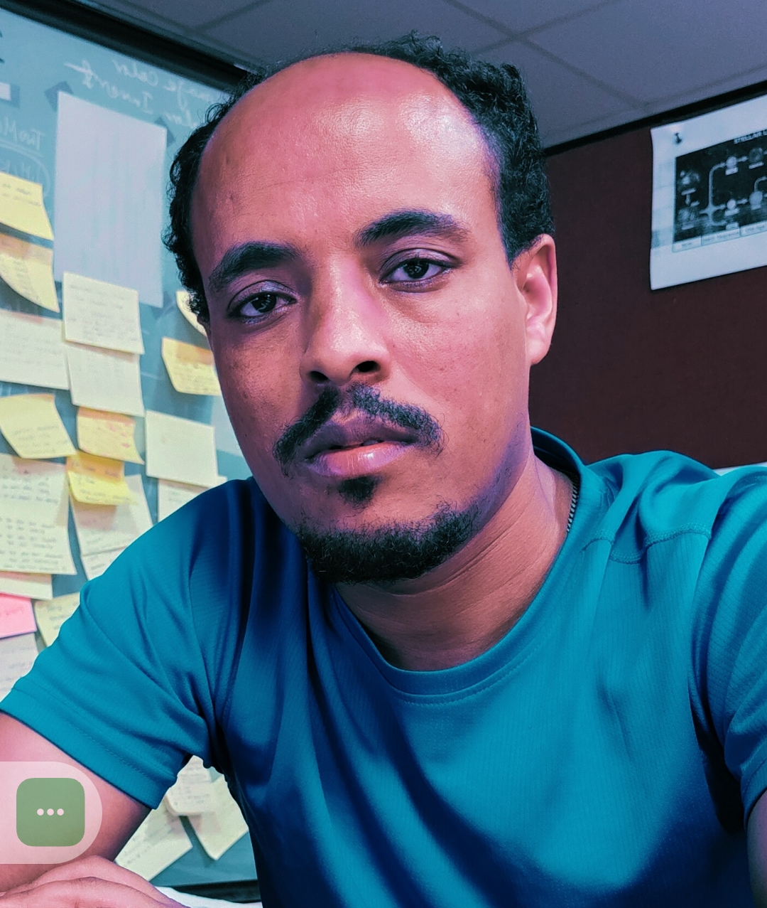

Assistant Professor | Stellar Astrophysics | Classical Novae | Simbiotic Novae
My name is GGG. I grew up in a small village called Toll, located about 250 km north of Addis Ababa, Ethiopia, in a farming family whose livelihood depended entirely on agriculture. Like my family, I also worked on the farm until I completed the nearby elementary school (up to grade 8). I then moved to the small town of Molale to pursue my secondary education. After successfully completing high school, I joined Debre Berhan University for my bachelor’s degree and became part of the Department of Physics—although my first preference had actually been mathematics. Despite that, I graduated with distinction, ranking third in my class. At that time, I never imagined becoming an astronomer; I simply hoped to teach physics in high school. However, I was later given the opportunity to continue my studies, earning a Master’s degree from Dilla University and a second Master’s from the University of Ghana. Eventually, I traveled to India to pursue my Ph.D. in Astronomy, which I successfully completed in 2025 after overcoming numerous challenges, including delays caused by the global pandemic. My research focuses on cataclysmic variable stars, with a particular emphasis on the multi-wavelength behavior of novae. My work involves photoionization modeling and the analysis of optical and NIR emission lines.
Email: gesesewreta@dbu.edu.et
GitHub: github.com/gesesew/gesesew.github.io.git